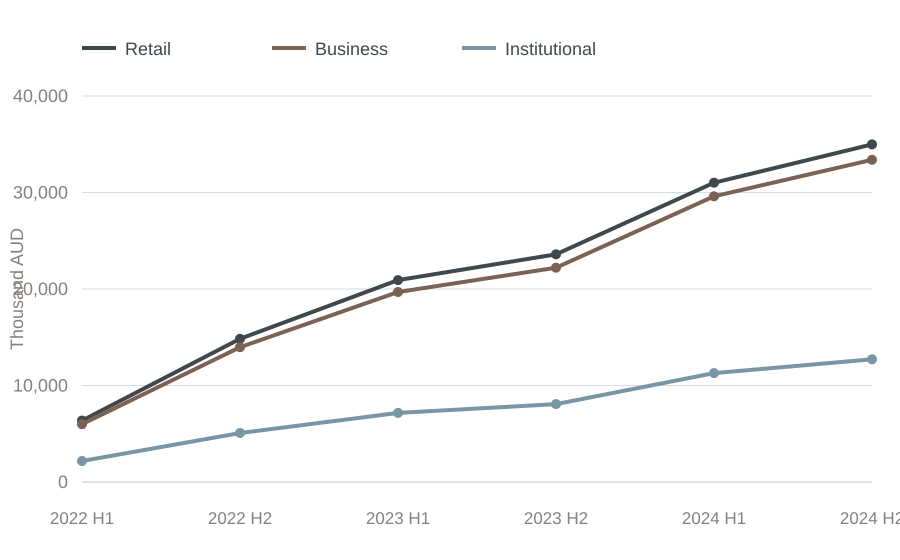
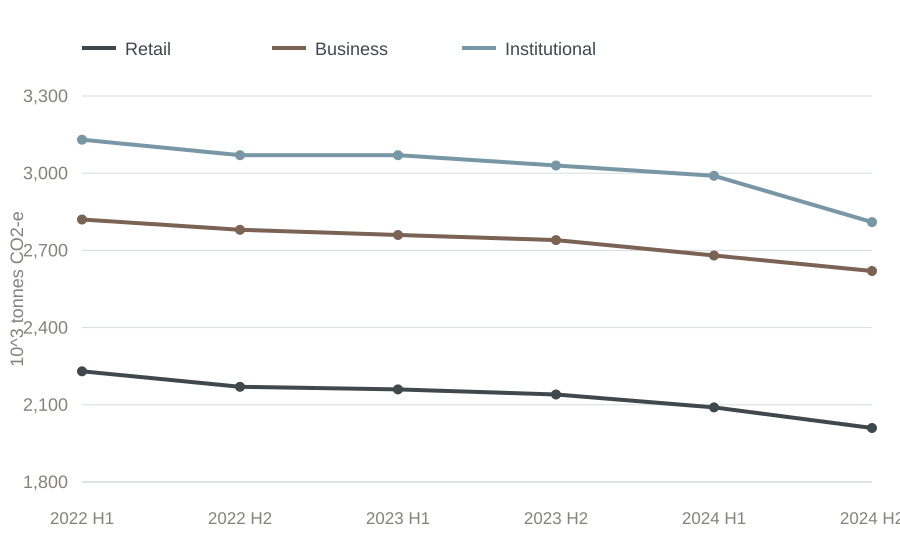
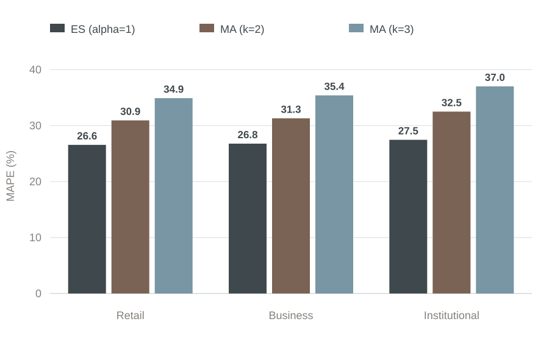

Retail
Ŷ = 304,882.58 − 132.623X
- R²
- 0.9135
- Adjusted R²
- 0.8918
- Coefficient p-value
- 0.0029
Case Study · 04
CBA 即 Commonwealth Bank of Australia（澳大利亚联邦银行）。本项目是墨尔本大学 MGMT90280 Managerial Decision Analytics 课程小组作业，以 CBA 绿色贷款为研究对象，结合描述性、预测性与处方性分析，比较不同贷款类别的回报、碳排放数据与资源配置结果。
本项目以澳大利亚联邦银行（CBA）的绿色贷款为研究对象，将其分为 Retail、Business 和 Institutional 三类。基于 CBA 报告数据及作业中的估算数据，分析 2022 H1—2024 H2 的回报与碳排放，比较预测方法，并完成给定约束下的投资组合配置。
项目由小组共同完成。我担任小组负责人，主要负责回归与预测分析，并协调成员分工和项目进度。Predictive Analysis 由我与一名组员共同完成。
团队按 Retail、Business 与 Institutional 整理贷款回报和碳排放数据，并将年度信息拆分为 2022 H1—2024 H2 的半年度估计序列。
团队以模拟客户数据进行 K-means 聚类，分别描述零售与非零售客户的风险、收入及地区或行业特征。
预测部分比较指数平滑（α=1）与移动平均（k=2、k=3），使用 MAE、MSE 和 MAPE 评估误差。
以贷款回报金额为因变量、碳排放数据为自变量，在 95% 置信水平下分别检查三类贷款的线性关系。
团队使用 Markowitz 均值—方差模型和 Excel Solver，在投资比例非负、合计为 1 且预期回报不低于 10% 的约束下最小化组合方差。
2022 H1—2024 H2，单位：千澳元

三类估计回报金额均随时间上升，Retail 与 Business 的规模高于 Institutional。
数据来源：分析工作簿「碳排放量+回报金额」A12:D18。作业根据公开信息与假设形成半年度估计值。2022 H1—2024 H2，单位：10³ 吨 CO₂-e

三类序列在样本期内总体下降。
数据来源：分析工作簿「碳排放量+回报金额」A2:D8。指数平滑与 2 期、3 期移动平均，单位：%

在三类贷款的回报金额预测中，指数平滑（α=1）的 MAPE 均低于两种移动平均。作业也以 MAE 与 MSE 作同类比较。
数据来源：分析工作簿「碳排放量+回报金额」A27:D40。Y 为对应类别的回报金额（千澳元），X 为对应类别的碳排放数据（10³ 吨 CO₂-e）；样本期为 2022 H1—2024 H2，共 6 个观测值。
Ŷ = 304,882.58 − 132.623X
Ŷ = 388,958.95 − 134.690X
Ŷ = 101,120.24 − 30.953X
三组回归的系数均为负，且系数 P-value 均小于0.05。
来源：分析工作簿「碳排放量+回报金额」G3:O62。以下按原文件顺序展示课程作业全部 49 页。公开展示副本已隐去其他组员姓名；点击缩略图可查看高清页面。